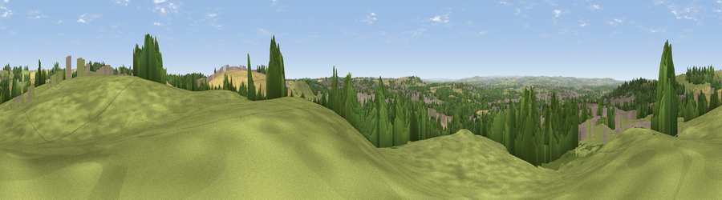

Viewpoint near Houghton-le-Spring
#15189 in England · top 30% of its area beats it · near Houghton-le-SpringThe view, rendered

A 360° render of this exact spot computed from the terrain model, tree cover and land cover — summer colours, afternoon light, calibrated against photographs of famous viewpoints. Real trees, hedges and buildings will differ in detail.
The panorama
Grey silhouette: terrain skyline in each direction (720 bearings, Earth curvature and refraction included). Dashed green: skyline with trees (+15 m) and buildings (+8 m) as obstacles. Blue strip: how far the ground is visible on each bearing.
Where the view opens
Wedge length = distance to the farthest visible ground on that bearing (vegetation-aware). Rings at 10, 25 and 50 km.
What fills the view
41% grassland · 21% woodland · 19% built-up · 17% cropland ·
Angular shares of the visible panorama (visual magnitude), not map area. Landscape diversity 0.59 (0–1 Shannon).
Key numbers
More beautiful places nearby
The staircase of upgrades: each row has a higher view potential than everything closer. Driving times are estimates from straight-line distance, calibrated against real road routing — check an actual route before setting out.
| Place | Direction | Drive | Score |
|---|---|---|---|
| Viewpoint near Hetton-le-Hole | ESE · 1 km | ~3 min | 59.1 |
| Viewpoint near Hetton-le-Hole | SE · 1 km | ~4 min | 65.4 |
| Viewpoint near Houghton-le-Spring | NNE · 2 km | ~5 min | 72.0 |
| Viewpoint near Houghton-le-Spring | NE · 2 km | ~5 min | 73.7 |
| Viewpoint near Houghton-le-Spring | ENE · 2 km | ~6 min | 76.0 |
| Viewpoint near Sunniside | WNW · 16 km | ~28 min | 77.6 |
| Pontop Pike | W · 21 km | ~35 min | 77.8 |
| Viewpoint near Lazenby | SE · 38 km | ~56 min | 86.4 |
54.83750, -1.44920 · source: screening · position refined by local search. Computed location — check access rights before visiting.